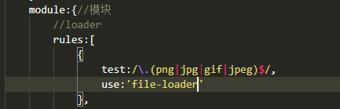
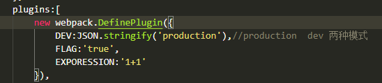
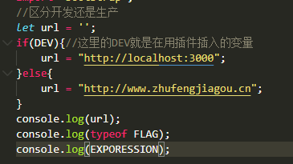

1.什么是webpack
webpack可以看作是模块打包机：他做的事情是，分析你的项目结构，
找到javascript模块以及其他的一些浏览器不能直接运行的拓展语言（Scss TypScript），
并将其打包为合适的格式以浏览器使用。

可以做的事情
代码转换、文件优化、代码分割、模块合并、自动刷新、代码校验、自动发布
2.需要提前掌握的内容
需要node基础，以及npm的使用，掌握es6语法
3.本课程最终掌握的webpack哪些内容
webpack常见配置、webpack高级配置、webpack优化策略、ast抽象语法树、webpack中的Tapable、
掌握webpack流程、手写webpack、手写webpack中常见的loader、手写常见的plugin
4.开始操作
安装本地webpack webpack-cli -D ‘-D’指表示上线的时候不需要这两个包
yarn init -y 初始化依赖，然后执行 yarn add webpack webpack-cli -D
在根目录新建一个src文件夹，在src文件夹下新建一个index.js文件并随意书写点内容如下图：

*注意：webpack可以进行0配置（但是很弱）
执行：npx webpack（webpack5.0之后支持的语法） 就可以直接进行打包
执行命令默认回去找node_modules文件夹下的.bin目录下的webpack.cmd文件,然后根据判断条件执行红框的命令
npm 从5.2版开始，增加了 npx 命令。（阮一峰网络日志详解npx）
执行命令默认回去找node_modules文件夹下的.bin目录下的webpack.cmd文件,然后根据判断条件执行红框的命令
npm 从5.2版开始，增加了 npx 命令。（阮一峰网络日志详解npx）

然后在webpack.js文件中会执行webpackz-cli，如果安装了就执行，没有就提示安装webpack-cli

默认结果会生成dist文件夹，里面包含main.js文件,新建一个html文件引用main.js,就可以在本地直接运行了
再新建一个a.js，里面用node语法写，如下图
index.js里面也更换成node写法，如下图，并执行npx webpack命令打包

新建一个html文件引用打包出来的main.js,竟然也可以在本地直接运行了
*结论：webpack可以以当前index.js文件为准，查找所有require进来的文件，
帮我们解决node环境中的文件依赖（require）问题，并生成一个文件
但是打包出来的总是dist文件夹和main.js文件，接下来webpack配置修改开始,手动配置webpack，默认配置文件的名字是
webpack.config.js(必须是这个名字,点击看原因)文件 ，
所以可以自己新建一个这个名字的文件进行手动配置，写法用node语法写，然后执行npx webpack，写法及结果如下图：
webpack.config.js文件名字原因（ 后期webpack.config.js名字是可以修改的 ）


打包好的文件夹只能在本地运行，因此现在要安装一个webpack-dev-server服务器,让项目运行在本地服务器上
添加前端服务器
控制台执行yarn add webpack-dev-server -D 安装完毕执行 npx webpack-dev-server 运行，
但他不会执行dist文件夹下的文件，而是运行静态目录，所以我们需要在webpack.config.js配置文件加上开发服务器的配置
html插件的配置和使用
但是我不能每次先打包好在自己新建index.html去手动引用，因此，需要用插件实现自动生成html去自动引用。
首先要在src源文件夹下新建index.html作为打包之后的模板，执行 yarn add html-webpack-plugin
然后在webpack.config.js引用HtmlWebpackPlugin插件
css-loader的配置和使用
希望css也用模块的方式引用
新建一个index.css在src文件夹下，在index.js中require('./index.css');在development模式下，执行 npm run dev 会报错,因此， 需要在配置模块解析css( 语法可能会有更新，请随时关注webpack最新语法 )
新建一个index.css在src文件夹下，在index.js中require('./index.css');在development模式下，执行 npm run dev 会报错,因此， 需要在配置模块解析css( 语法可能会有更新，请随时关注webpack最新语法 )
安装cssloader 执行： yarn add css-loader style-loader -D
配置css-loader
配置css-loader
结果显示
安装插件使插入到head标签中的样式打包成一个引用的css文件引入的方式（抽离css插件）
yarn add mini-css-extract-plugin -Dwebpack4.0之后最新插件名
yarn add mini-css-extract-plugin -Dwebpack4.0之后最新插件名
编译less 安装less yarn add less less-loader -D less-loader会调用less less会解析@import语法和解析css文件中路径问题

加css前缀的loader 执行 yarn add postcss-loader autoprefixer
插件引入，并配置一下，打包，竟然报错，这里我们还要新建一个名叫postcss.config.js文件，并写上配置，因为这个插件在调用时会找postcss.config.js配置文件
插件引入，并配置一下，打包，竟然报错，这里我们还要新建一个名叫postcss.config.js文件，并写上配置，因为这个插件在调用时会找postcss.config.js配置文件

生产模式下压缩css文件内容 yarn add optimize-css-assets-webpack-plugin -D
在webpack.config.js中require,并配置
在webpack.config.js中require,并配置
生产模式下压缩css文件内容 yarn add terser-webpack-plugin -D
在webpack.config.js中require,并配置
在webpack.config.js中require,并配置
在js文件中书写es6语法，对es6语法进行es5的转换
yarn add babel-loader @babel/core @bable/preset-env -D
@babel/core是核心模块 @bable/preset-env 负责语法转换
配置babel
再执行打包，结果如下：es6语法转化成了es5
yarn add babel-loader @babel/core @bable/preset-env -D
@babel/core是核心模块 @bable/preset-env 负责语法转换
配置babel
再执行打包，结果如下：es6语法转化成了es5
yarn add @babel/plugin-proposal-class-properties -D es7 ---> es5的loader插件
yarn add @babel/runtime 安装
@babel/runtime是一个包含Babel模块化运行时帮助程序和的版本的库regenerator-runtime。 它打算dependency与Babel插件一起用作运行时@babel/plugin-transform-runtime。请查看该软件包中的文档以进行使用。 有时Babel可能会在输出中注入一些跨文件相同的代码，因此有可能被重用。
yarn add @babel/polyfill 安装语法转换补丁文件那个文件需要就在那个文件require('@babel/polyfill')
@babel/runtime是一个包含Babel模块化运行时帮助程序和的版本的库regenerator-runtime。 它打算dependency与Babel插件一起用作运行时@babel/plugin-transform-runtime。请查看该软件包中的文档以进行使用。 有时Babel可能会在输出中注入一些跨文件相同的代码，因此有可能被重用。
yarn add @babel/polyfill 安装语法转换补丁文件那个文件需要就在那个文件require('@babel/polyfill')
js规范校验器 安装 yarn add eslint eslint-loader -D配置如下：
然后在eslint官网上进demo菜单，在最下面下载.eslintrc.json文件 并给文件名前面添加一点
强制在babel-loader之前执行
强制在babel-loader之前执行
结果可能出现很多语法问题，因此在这里不多解释，平时书写代码时慎用，不然会有许多小不重要的bug
第三方模块的使用
例如：jquery的使用 安装yarn add jquery
安装yarn add expose-loader在index.js中import 的写法
安装yarn add expose-loader在index.js中import 的写法

或者是配置卸载配置文件中
全局注入$(不是挂载在window上)

打包时不要将jquery打包配置如下：
webpack图片处理
引用图片情况：
1.在js中创造图片出来
2.在css文件中引用 background('url')
3.在html中直接引用 < img src="" alt="" >
1.在js中创造图片出来
2.在css文件中引用 background('url')
3.在html中直接引用 < img src="" alt="" >
安装 yarn add file-loader -D file-loader的作用是：默认会在内部生成一张图片 到打包好的文件夹下，把生成的图片的名字返回回来

在css中引用图片就不用再安装loader，因为css-loader就会把css文件中的图片引入转化为require的方式，并解析
安装yarn add html-withimh-loader -D解决在html文件中引用图片的问题，配置如下：
安装yarn add url-loader 做一个限制，当图片小于限制时，可以用base64来转化
静态资源分类
静态资源分类的目的时将所有的img、js、css等打包到对应的文件夹下方便管理
给所有引用资源加统一的输出路径配置( 注意图片路径问题 )
多页面应用程序打包
新建文件夹 yarn init -y 初始化
yarn add webpack webpack-cli -D
新建src文件夹及其他文件和webpack.config.js基本配置截图如下：
之后执行 npx webpack看结果
之后执行 npx webpack看结果
安装yarn add html-webpack-plugin -D html-webpack-plugin作用是：用模板生成html，并且将js自动引入
配置source-map
什么是source-map： sourcemap就是为了解决处理过的生产环境中的代码出现bug，
调试的时候只能定位到压缩处理后的代码的位置，无法定位到开发环境中的源代码。
简单理解，就是构建了处理前的代码和处理后的代码之间的桥梁。主要是方便开发人员的错误定位。
在module.exports的配置（四种配置），如下：然后打包看代码及报错显示
在module.exports的配置（四种配置），如下：然后打包看代码及报错显示

开启代码实时监控
webpack小插件
1）clean-webpack-plugin 第三方 2）copyWebpackPlugin 第三方复制插件 3）bannerPlugin webpack内置插件 内置插件在使用前要先require(webpack) 版权声明插件
yarn add clean-webpack-plugin copy-webpack-plugin -D
yarn add clean-webpack-plugin copy-webpack-plugin -D
webpack跨域问题
webpack默认自带express框架的
新建server.js文件，配置如下：
访问http://localhost:3000/api/user 可以得到返回数据
访问http://localhost:3000/api/user 可以得到返回数据
webpack中的resolve配置
Webpack 在启动后会从配置的入口模块出发找出所有依赖的模块，
Resolve 配置 Webpack 如何寻找模块所对应的文件。
Webpack 内置 JavaScript 模块化语法解析功能，
默认会采用模块化标准里约定好的规则去寻找，
但你也可以根据自己的需要修改默认的规则。
定义环境变量
生产环境和开发环境的区分，使用webpack自带插件(测试)


仅仅是上面的做法还是不够的，一般还是需要新建webpack.dev.js和webpack.prod.js两个文件来控制和区分开发和生产
因此需要安装插件实现 yarn add webpack-merge -D
打包时执行命令 npm run build -- --config webpack.dev.js
之后就可以按照开发与生产模式的不同来分别配置，方便控制
因此需要安装插件实现 yarn add webpack-merge -D
打包时执行命令 npm run build -- --config webpack.dev.js
之后就可以按照开发与生产模式的不同来分别配置，方便控制
webpack优化手段
1. noParse:/正则表达式/ webpack配置优化
2. new webpack.IgnorePlugin(/正则表达式/,/正则表达式/) webpack内置插件优化
3. 动态链接库 DLLPlugin
4. happypack多线程打包,本质是happypack/loader去打包的
5. webpack自带优化
6. 多页面打包抽离公共代码
2. new webpack.IgnorePlugin(/正则表达式/,/正则表达式/) webpack内置插件优化
3. 动态链接库 DLLPlugin
4. happypack多线程打包,本质是happypack/loader去打包的
5. webpack自带优化
6. 多页面打包抽离公共代码
首先新建一个SEO文件夹用来演示webpack优化，执行命令：
yarn add webpack webpack-cli html-webpack-plugin @babel/core babel-loader @babel/preset-env @babel/preset-react jquery moment -D
目录搭建及配置：
yarn add webpack webpack-cli html-webpack-plugin @babel/core babel-loader @babel/preset-env @babel/preset-react jquery moment -D
目录搭建及配置：

可以使打包出来的代码支持各种引用方式，这个配置卸载新建的webpack.config.react.js中，打包的是test.js,test.js是自己写的，这里相当于把test.js当成动态链接库打包
DLLPlugin内置插件使用
mainfest.json文件我们称之为任务清单，目的：把一些第三方库提前打包出一个文件，然后用引入的方式引入，这里是以react react-dom为例打包
使用动态链接库
js多线程打包，css打包基本上一致，此处省略
在生产模式下，以 import xxx from 'xxx' 方式引入的代码，会默认去掉没有用到的方法及代码，1、并把引用的代码相当于直接拷贝在当前文件里
学名：tree-shaking 树的摇晃 白没用的代码自动删除掉
以 require 的方式引入的则不行，不会删除没用代码,还有就是es6语法会把require返回的结果先挂在default上
其他：scope hosting 2、作用域提升，在webpack中自动省略可以简化的代码
学名：tree-shaking 树的摇晃 白没用的代码自动删除掉
以 require 的方式引入的则不行，不会删除没用代码,还有就是es6语法会把require返回的结果先挂在default上
其他：scope hosting 2、作用域提升，在webpack中自动省略可以简化的代码
多页面打包抽离公共代码配置:1.第一个是抽离自己编写代码的公共代码。2.第二个是抽离第三方插件的代码，例如jquery。这样就做到了分别抽离
~~~懒加载~~~
下图中import() 语法就是懒加载的实现原理，打包的时候就会生成对应引用的文件，当按钮点击时就会直接调用该文件
像vue、react等框架都是使用的这个方法实现的懒加载
像vue、react等框架都是使用的这个方法实现的懒加载
~~~热更新~~~
当服务器运行时，每当我们修改源代码时都会刷新页面，不友好，因此需要热更新
未完待续~~~